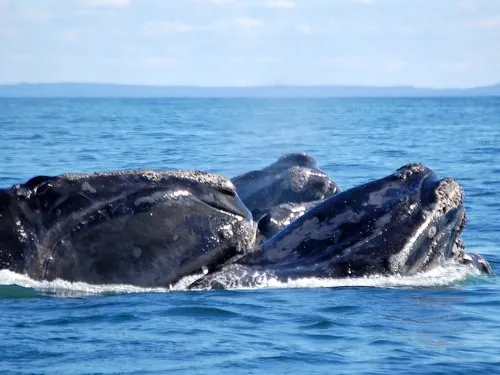

哺乳动物 · 动物界
北大西洋露脊鲸 Eubalaena glacialis

北大西洋的濒危须鲸，头部布满白色老茧，体胖无背鳍，因游速慢、死后漂浮而被早期捕鲸者视为“最合适的鲸”，现存仅约 350 头。
- 分类
- 门脊索动物门纲哺乳纲目鲸目科露脊鲸科属露脊鲸属
- 栖息环境
- 北大西洋温带与亚寒带沿岸海域，繁殖期在温暖水域
- 地理分布
- 北大西洋西部，从加拿大、美国东北部到美国东南部繁殖场
- 保护级别
- IUCN 极危（CR）；非中国分布物种
物种志
北大西洋露脊鲸体长 13–16 米，体重 40–70 吨，雌性大于雄性。它身体粗壮，没有背鳍，下颌向上拱起，头部、嘴唇和眼周分布着粗糙的白色角质老茧，每头鲸的老茧图案都不相同，可用于个体识别。
北大西洋露脊鲸分布于北大西洋沿岸，夏季在加拿大和美国东北部海域摄食，冬季南迁到美国东南部海域繁殖。它用鲸须滤食桡足类和小型甲壳动物，进食时张开大嘴缓慢游过密集的浮游动物群。雌性每 3–4 年产 1 仔，妊娠期约 1 年，寿命可达 50–100 年。由于历史上被大量捕杀，加上船只撞击和渔具缠绕，其种群至今仅约 350 头，被列为极危。
形态与习性
- 食性桡足类与小甲壳动物
- 体长13–16 m
- 体重40–70 t
- 寿命50–100 年
- 繁殖每 3–4 年产 1 仔，妊娠约 1 年
- 特征无背鳍，头部有白色角质老茧
趣味知识
- 露脊鲸因游速慢、死后漂浮，被早期捕鲸者视为“最合适的鲸”。
- 每头露脊鲸头部的白色老茧图案都不同，可用于个体识别。
- 全球北大西洋露脊鲸仅存约 350 头，船只撞击是主要威胁。